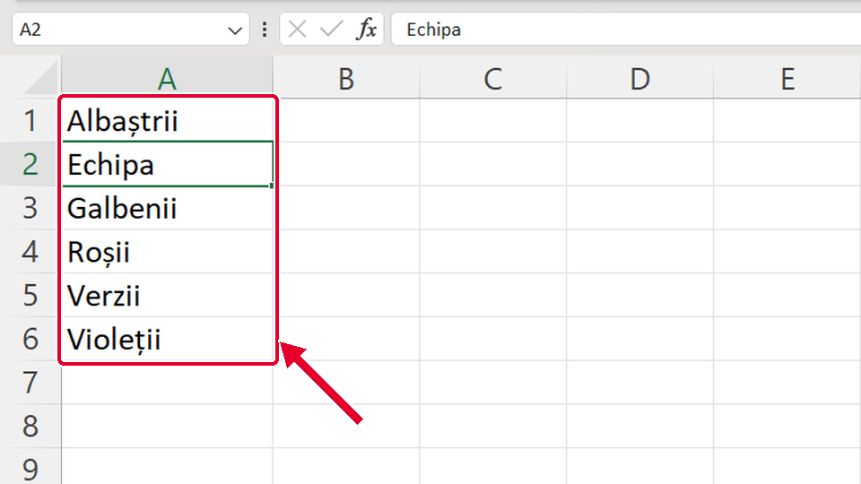
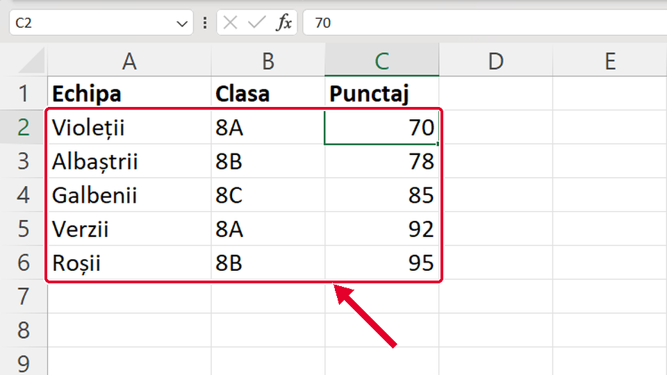
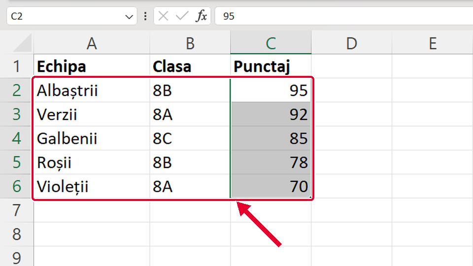
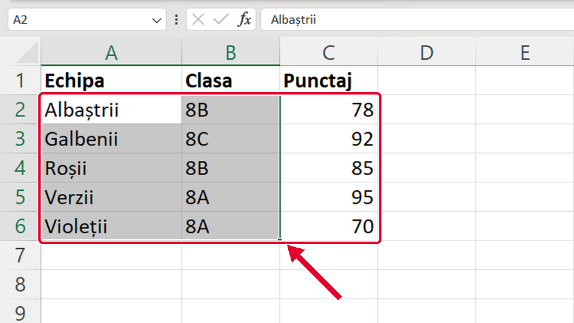

Început
Sortezi tot tabelul după o coloană
Taste: Spațiu = pauză / continuă · ← și → = pasul anterior / următor · cu Tab ajungi la „Rulează singur”; acolo Spațiu îl pornește sau îl oprește. Poți apăsa și pe film.

Legat de asta
Se deschid într-o filă nouă, ca să nu pierzi filmul de aici.
- Același gestSuma cu un singur buton ↗
Tot un clic pe o celulă, apoi un buton din panglică: Σ Însumare automată (AutoSum), pe fila Pornire (Home).
- ÎnainteScris îngroșat cu Ctrl+B ↗
Rândul de sus, cu titlurile coloanelor, este capul de tabel: îl scrii îngroșat cu Ctrl+B.
- ApoiGraficul linie din tabel ↗
Alt buton din panglică, pe fila Inserare (Insert): din tabel faci un grafic linie.
- ApoiSortezi după două criterii ↗
Sortezi după două criterii, în fereastra Sortare (Sort): întâi Clasa, apoi, cu Adăugare nivel (Add Level), Punctajul.
Dacă nu-ți iese
Alege ce vezi pe ecran.
Titlul Echipa a ajuns pe rândul 2, printre nume, iar sus e acum Albaștrii.

De ce: În listă sunt doar texte. Excel n-a recunoscut primul rând ca rând de antet și l-a sortat împreună cu numele, chiar dacă titlul e scris îngroșat.
Ce faci:
- Apeși Ctrl+Z.
- Pe fila Date (Data) apeși butonul mare Sortare (Sort).
- Bifezi Datele mele au anteturi (My data has headers), verifici că la Sortare după (Sort by) scrie Echipa și apeși OK.
Taste: Ctrl+Z
Cel mai mic punctaj, 70, a urcat sus, iar cel mai mare a ajuns jos.

De ce: Ai apăsat butonul mic de SUS, sortare de la cel mai mic la cel mai mare. Pentru clasament îți trebuie cel de JOS.
Ce faci:
- Nu e nevoie de Ctrl+Z: apeși butonul mic de jos, sortare de la cel mai mare la cel mai mic.
- Excel pune tabelul în ordinea nouă, tot cu rândurile întregi.
Punctajele s-au pus în ordine, dar echipele au rămas pe loc: Albaștrii au acum 95, deși aveau 78.

De ce: Ai selectat doar coloana Punctaj, iar în fereastra Sort Warning ai ales Continuați cu selecția curentă (Continue with the current selection). Excel a mutat doar punctajele, deci rândurile s-au desperecheat.
Ce faci:
- Apeși Ctrl+Z: tabelul revine cum era.
- Dai clic pe O SINGURĂ celulă din coloana Punctaj, de exemplu C2.
- Apeși din nou butonul de sortare. Dacă apare fereastra, lași aleasă prima variantă, Extindeți selecția (Expand the selection), și apeși Sort.
Taste: Ctrl+Z
Echipele s-au pus în ordinea alfabetului, dar punctajele au rămas pe loc: Galbenii au acum 92, deși aveau 85.

De ce: Ai selectat două coloane din trei, Echipa și Clasa. Când selecția are mai multe coloane, Excel nu te mai întreabă: sortează doar ce ai selectat.
Ce faci:
- Apeși Ctrl+Z.
- Dai clic pe o singură celulă din coloana după care sortezi, de exemplu A2.
- Apeși Sortare de la A la Z (Sort A to Z): Excel ia singur tot tabelul.
Taste: Ctrl+Z